|
MODFLOW 6
version6.2.2
MODFLOW6CodeDocumentation
|
|
MODFLOW 6
version6.2.2
MODFLOW6CodeDocumentation
|
Data Types | |
| type | gwfnpftype |
Functions/Subroutines | |
| subroutine, public | npf_cr (npfobj, name_model, inunit, iout) |
| subroutine | npf_df (this, dis, xt3d, ingnc, npf_options) |
| define the NPF package instance More... | |
| subroutine | npf_ac (this, moffset, sparse) |
| subroutine | npf_mc (this, moffset, iasln, jasln) |
| subroutine | npf_ar (this, ic, ibound, hnew, grid_data) |
| allocate and read this NPF instance More... | |
| subroutine | npf_ad (this, nodes, hold, hnew, irestore) |
| subroutine | npf_cf (this, kiter, nodes, hnew) |
| subroutine | npf_fc (this, kiter, njasln, amat, idxglo, rhs, hnew) |
| subroutine | npf_fn (this, kiter, njasln, amat, idxglo, rhs, hnew) |
| subroutine | npf_nur (this, neqmod, x, xtemp, dx, inewtonur, dxmax, locmax) |
| subroutine | npf_cq (this, hnew, flowja) |
| subroutine | sgwf_npf_thksat (this, n, hn, thksat) |
| subroutine | sgwf_npf_qcalc (this, n, m, hn, hm, icon, qnm) |
| subroutine | npf_save_model_flows (this, flowja, icbcfl, icbcun) |
| subroutine | npf_print_model_flows (this, ibudfl, flowja) |
| subroutine | npf_da (this) |
| subroutine | allocate_scalars (this) |
| subroutine | allocate_arrays (this, ncells, njas) |
| subroutine | read_options (this) |
| subroutine | set_options (this, options) |
| subroutine | rewet_options (this) |
| subroutine | check_options (this) |
| subroutine | read_grid_data (this) |
| subroutine | set_grid_data (this, npf_data) |
| subroutine | prepcheck (this) |
| subroutine | preprocess_input (this) |
| preprocess the NPF input data More... | |
| subroutine | sgwf_npf_wetdry (this, kiter, hnew) |
| subroutine | rewet_check (this, kiter, node, hm, ibdm, ihc, hnew, irewet) |
| subroutine | sgwf_npf_wdmsg (this, icode, ncnvrt, nodcnvrt, acnvrt, ihdcnv, kiter, n) |
| real(dp) function | hy_eff (this, n, m, ihc, ipos, vg) |
| real(dp) function, public | hcond (ibdn, ibdm, ictn, ictm, inewton, inwtup, ihc, icellavg, iusg, iupw, condsat, hn, hm, satn, satm, hkn, hkm, topn, topm, botn, botm, cln, clm, fawidth, satomega, satminopt) |
| real(dp) function, public | vcond (ibdn, ibdm, ictn, ictm, inewton, ivarcv, idewatcv, condsat, hn, hm, vkn, vkm, satn, satm, topn, topm, botn, botm, flowarea) |
| real(dp) function, public | condmean (k1, k2, thick1, thick2, cl1, cl2, width, iavgmeth) |
| real(dp) function | logmean (d1, d2) |
| real(dp) function, public | hyeff_calc (k11, k22, k33, ang1, ang2, ang3, vg1, vg2, vg3, iavgmeth) |
| subroutine | calc_spdis (this, flowja) |
| subroutine | sav_spdis (this, ibinun) |
| subroutine | sav_sat (this, ibinun) |
| subroutine | increase_edge_count (this, nedges) |
| subroutine | set_edge_properties (this, nodedge, ihcedge, q, area, nx, ny, distance) |
| real(dp) function, public | thksatnm (ibdn, ibdm, ictn, ictm, inwtup, ihc, iusg, hn, hm, satn, satm, topn, topm, botn, botm, satomega, satminopt) |
| subroutine gwfnpfmodule::allocate_arrays | ( | class(gwfnpftype) | this, |
| integer(i4b), intent(in) | ncells, | ||
| integer(i4b), intent(in) | njas | ||
| ) |
Definition at line 1122 of file gwf3npf8.f90.
| subroutine gwfnpfmodule::allocate_scalars | ( | class(gwfnpftype) | this | ) |
Definition at line 1029 of file gwf3npf8.f90.
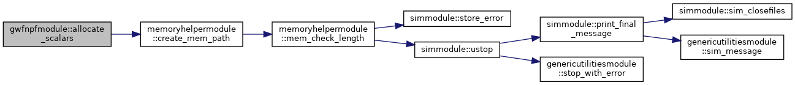
| subroutine gwfnpfmodule::calc_spdis | ( | class(gwfnpftype) | this, |
| real(dp), dimension(:), intent(in) | flowja | ||
| ) |
Definition at line 3032 of file gwf3npf8.f90.
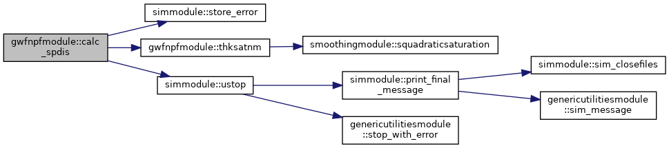
| subroutine gwfnpfmodule::check_options | ( | class(gwfnpftype) | this | ) |
Definition at line 1522 of file gwf3npf8.f90.
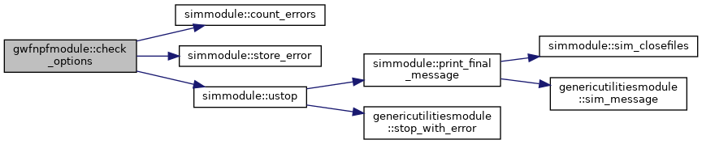
| real(dp) function, public gwfnpfmodule::condmean | ( | real(dp), intent(in) | k1, |
| real(dp), intent(in) | k2, | ||
| real(dp), intent(in) | thick1, | ||
| real(dp), intent(in) | thick2, | ||
| real(dp), intent(in) | cl1, | ||
| real(dp), intent(in) | cl2, | ||
| real(dp), intent(in) | width, | ||
| integer(i4b), intent(in) | iavgmeth | ||
| ) |
Definition at line 2808 of file gwf3npf8.f90.
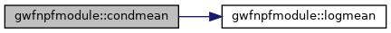
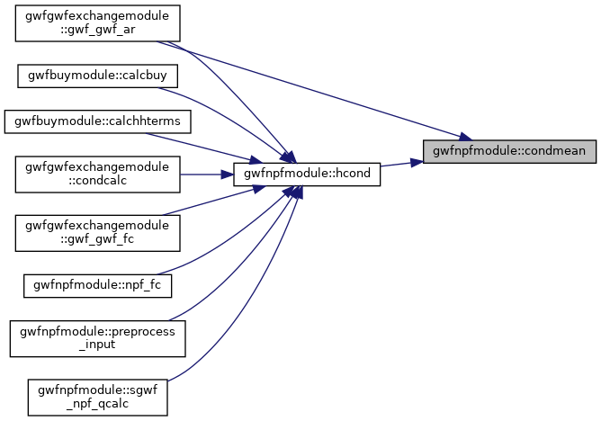
| real(dp) function, public gwfnpfmodule::hcond | ( | integer(i4b), intent(in) | ibdn, |
| integer(i4b), intent(in) | ibdm, | ||
| integer(i4b), intent(in) | ictn, | ||
| integer(i4b), intent(in) | ictm, | ||
| integer(i4b), intent(in) | inewton, | ||
| integer(i4b), intent(in) | inwtup, | ||
| integer(i4b), intent(in) | ihc, | ||
| integer(i4b), intent(in) | icellavg, | ||
| integer(i4b), intent(in) | iusg, | ||
| integer(i4b), intent(in) | iupw, | ||
| real(dp), intent(in) | condsat, | ||
| real(dp), intent(in) | hn, | ||
| real(dp), intent(in) | hm, | ||
| real(dp), intent(in) | satn, | ||
| real(dp), intent(in) | satm, | ||
| real(dp), intent(in) | hkn, | ||
| real(dp), intent(in) | hkm, | ||
| real(dp), intent(in) | topn, | ||
| real(dp), intent(in) | topm, | ||
| real(dp), intent(in) | botn, | ||
| real(dp), intent(in) | botm, | ||
| real(dp), intent(in) | cln, | ||
| real(dp), intent(in) | clm, | ||
| real(dp), intent(in) | fawidth, | ||
| real(dp), intent(in) | satomega, | ||
| real(dp), intent(in), optional | satminopt | ||
| ) |
Definition at line 2558 of file gwf3npf8.f90.
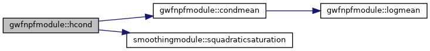
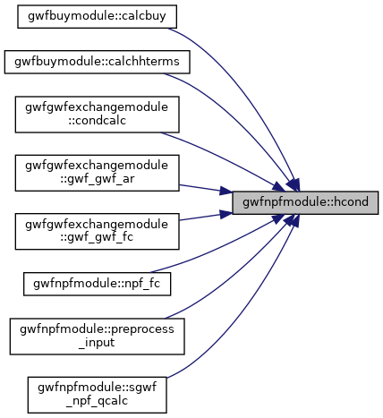
| real(dp) function gwfnpfmodule::hy_eff | ( | class(gwfnpftype) | this, |
| integer(i4b), intent(in) | n, | ||
| integer(i4b), intent(in) | m, | ||
| integer(i4b), intent(in) | ihc, | ||
| integer(i4b), intent(in), optional | ipos, | ||
| real(dp), dimension(3), intent(in), optional | vg | ||
| ) |
Definition at line 2458 of file gwf3npf8.f90.
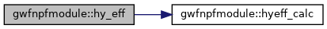
| real(dp) function, public gwfnpfmodule::hyeff_calc | ( | real(dp), intent(in) | k11, |
| real(dp), intent(in) | k22, | ||
| real(dp), intent(in) | k33, | ||
| real(dp), intent(in) | ang1, | ||
| real(dp), intent(in) | ang2, | ||
| real(dp), intent(in) | ang3, | ||
| real(dp), intent(in) | vg1, | ||
| real(dp), intent(in) | vg2, | ||
| real(dp), intent(in) | vg3, | ||
| integer(i4b), intent(in) | iavgmeth | ||
| ) |
Definition at line 2927 of file gwf3npf8.f90.
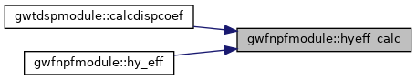
|
private |
Definition at line 3401 of file gwf3npf8.f90.
|
private |
Definition at line 2898 of file gwf3npf8.f90.
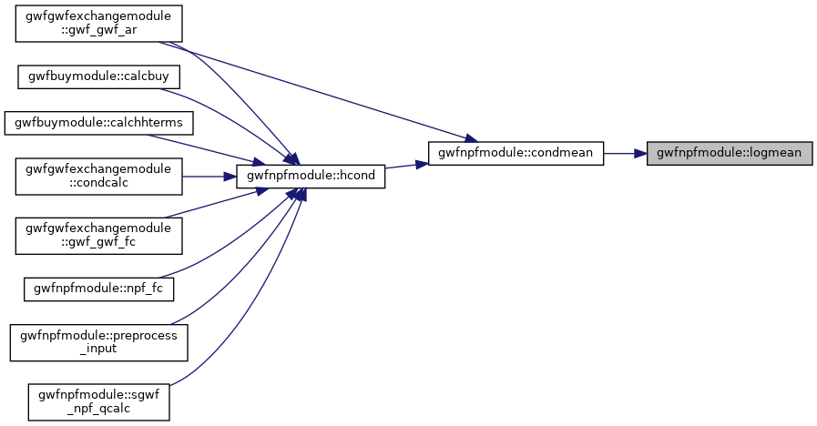
| subroutine gwfnpfmodule::npf_ac | ( | class(gwfnpftype) | this, |
| integer(i4b), intent(in) | moffset, | ||
| type(sparsematrix), intent(inout) | sparse | ||
| ) |
Definition at line 223 of file gwf3npf8.f90.
|
private |
Definition at line 327 of file gwf3npf8.f90.
| subroutine gwfnpfmodule::npf_ar | ( | class(gwfnpftype) | this, |
| type(gwfictype), intent(in), pointer | ic, | ||
| integer(i4b), dimension(:), intent(inout), pointer, contiguous | ibound, | ||
| real(dp), dimension(:), intent(inout), pointer, contiguous | hnew, | ||
| type(gwfnpfgriddatatype), intent(in), optional | grid_data | ||
| ) |
Allocate package arrays, read the grid data either from file or from the input argument (when the optional
| grid_data | is passed), preprocess the input data and call *_ar on xt3d, when active. | |
| this | instance of the NPF package | |
| [in] | ic | initial conditions |
| [in,out] | ibound | model ibound array |
| [in,out] | hnew | pointer to model head array |
| [in] | grid_data | (optional) data structure with NPF grid data |
Definition at line 276 of file gwf3npf8.f90.
|
private |
Definition at line 364 of file gwf3npf8.f90.
|
private |
Definition at line 712 of file gwf3npf8.f90.
| subroutine, public gwfnpfmodule::npf_cr | ( | type(gwfnpftype), pointer | npfobj, |
| character(len=*), intent(in) | name_model, | ||
| integer(i4b), intent(in) | inunit, | ||
| integer(i4b), intent(in) | iout | ||
| ) |
Definition at line 127 of file gwf3npf8.f90.
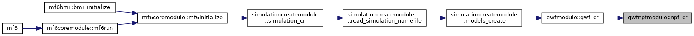
| subroutine gwfnpfmodule::npf_da | ( | class(gwfnpftype) | this | ) |
Definition at line 956 of file gwf3npf8.f90.
|
private |
This is a hybrid routine: it either reads the options for this package from the input file, or the optional argument
| npf_options | should be passed. A consistency check is performed, and finally xt3d_df is called, when enabled. | |
| this | instance of the NPF package | |
| [in,out] | dis | the pointer to the discretization |
| xt3d | the pointer to the XT3D 'package' | |
| [in] | ingnc | ghostnodes enabled? (>0 means yes) |
| [in] | npf_options | the optional options, for when not constructing from file |
Definition at line 167 of file gwf3npf8.f90.
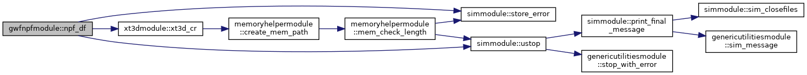
|
private |
Definition at line 402 of file gwf3npf8.f90.
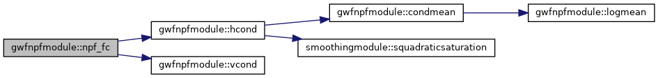
| subroutine gwfnpfmodule::npf_fn | ( | class(gwfnpftype) | this, |
| integer(i4b) | kiter, | ||
| integer(i4b), intent(in) | njasln, | ||
| real(dp), dimension(njasln), intent(inout) | amat, | ||
| integer(i4b), dimension(:), intent(in) | idxglo, | ||
| real(dp), dimension(:), intent(inout) | rhs, | ||
| real(dp), dimension(:), intent(inout) | hnew | ||
| ) |
Definition at line 518 of file gwf3npf8.f90.
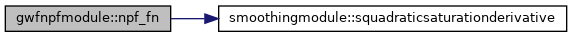
| subroutine gwfnpfmodule::npf_mc | ( | class(gwfnpftype) | this, |
| integer(i4b), intent(in) | moffset, | ||
| integer(i4b), dimension(:), intent(in) | iasln, | ||
| integer(i4b), dimension(:), intent(in) | jasln | ||
| ) |
Definition at line 247 of file gwf3npf8.f90.
|
private |
Definition at line 660 of file gwf3npf8.f90.
|
private |
Definition at line 909 of file gwf3npf8.f90.
|
private |
Definition at line 862 of file gwf3npf8.f90.
| subroutine gwfnpfmodule::prepcheck | ( | class(gwfnpftype) | this | ) |
Definition at line 1801 of file gwf3npf8.f90.
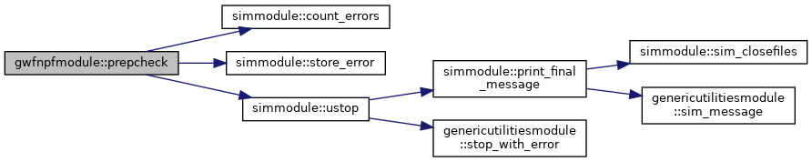
| subroutine gwfnpfmodule::preprocess_input | ( | class(gwfnpftype) | this | ) |
This routine consists of the following steps:
| this | the instance of the NPF package |
Definition at line 1971 of file gwf3npf8.f90.
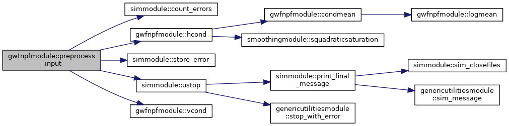
| subroutine gwfnpfmodule::read_grid_data | ( | class(gwfnpftype) | this | ) |
| subroutine gwfnpfmodule::read_options | ( | class(gwfnpftype) | this | ) |
Definition at line 1191 of file gwf3npf8.f90.
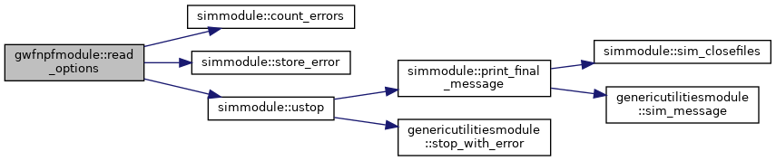
| subroutine gwfnpfmodule::rewet_check | ( | class(gwfnpftype) | this, |
| integer(i4b), intent(in) | kiter, | ||
| integer(i4b), intent(in) | node, | ||
| real(dp), intent(in) | hm, | ||
| integer(i4b), intent(in) | ibdm, | ||
| integer(i4b), intent(in) | ihc, | ||
| real(dp), dimension(:), intent(inout) | hnew, | ||
| integer(i4b), intent(out) | irewet | ||
| ) |
Definition at line 2334 of file gwf3npf8.f90.
|
private |
Definition at line 1426 of file gwf3npf8.f90.
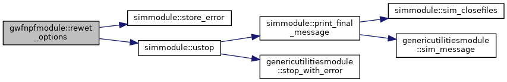
|
private |
Definition at line 3364 of file gwf3npf8.f90.
| subroutine gwfnpfmodule::sav_spdis | ( | class(gwfnpftype) | this, |
| integer(i4b), intent(in) | ibinun | ||
| ) |
Definition at line 3328 of file gwf3npf8.f90.
|
private |
Definition at line 3424 of file gwf3npf8.f90.
| subroutine gwfnpfmodule::set_grid_data | ( | class(gwfnpftype), intent(inout) | this, |
| type(gwfnpfgriddatatype), intent(in) | npf_data | ||
| ) |
Definition at line 1735 of file gwf3npf8.f90.
| subroutine gwfnpfmodule::set_options | ( | class(gwfnpftype) | this, |
| type(gwfnpfoptionstype), intent(in) | options | ||
| ) |
Definition at line 1409 of file gwf3npf8.f90.
|
private |
Definition at line 782 of file gwf3npf8.f90.
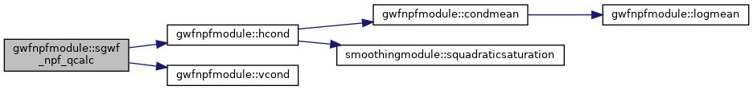
|
private |
Definition at line 750 of file gwf3npf8.f90.
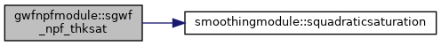
|
private |
Definition at line 2408 of file gwf3npf8.f90.
| subroutine gwfnpfmodule::sgwf_npf_wetdry | ( | class(gwfnpftype) | this, |
| integer(i4b), intent(in) | kiter, | ||
| real(dp), dimension(:), intent(inout) | hnew | ||
| ) |
Definition at line 2223 of file gwf3npf8.f90.
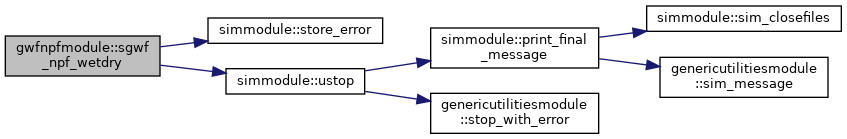
| real(dp) function, public gwfnpfmodule::thksatnm | ( | integer(i4b), intent(in) | ibdn, |
| integer(i4b), intent(in) | ibdm, | ||
| integer(i4b), intent(in) | ictn, | ||
| integer(i4b), intent(in) | ictm, | ||
| integer(i4b), intent(in) | inwtup, | ||
| integer(i4b), intent(in) | ihc, | ||
| integer(i4b), intent(in) | iusg, | ||
| real(dp), intent(in) | hn, | ||
| real(dp), intent(in) | hm, | ||
| real(dp), intent(in) | satn, | ||
| real(dp), intent(in) | satm, | ||
| real(dp), intent(in) | topn, | ||
| real(dp), intent(in) | topm, | ||
| real(dp), intent(in) | botn, | ||
| real(dp), intent(in) | botm, | ||
| real(dp), intent(in) | satomega, | ||
| real(dp), intent(in), optional | satminopt | ||
| ) |
Definition at line 3465 of file gwf3npf8.f90.
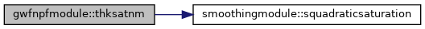
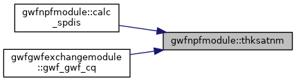
| real(dp) function, public gwfnpfmodule::vcond | ( | integer(i4b), intent(in) | ibdn, |
| integer(i4b), intent(in) | ibdm, | ||
| integer(i4b), intent(in) | ictn, | ||
| integer(i4b), intent(in) | ictm, | ||
| integer(i4b), intent(in) | inewton, | ||
| integer(i4b), intent(in) | ivarcv, | ||
| integer(i4b), intent(in) | idewatcv, | ||
| real(dp), intent(in) | condsat, | ||
| real(dp), intent(in) | hn, | ||
| real(dp), intent(in) | hm, | ||
| real(dp), intent(in) | vkn, | ||
| real(dp), intent(in) | vkm, | ||
| real(dp), intent(in) | satn, | ||
| real(dp), intent(in) | satm, | ||
| real(dp), intent(in) | topn, | ||
| real(dp), intent(in) | topm, | ||
| real(dp), intent(in) | botn, | ||
| real(dp), intent(in) | botm, | ||
| real(dp), intent(in) | flowarea | ||
| ) |
 1.8.17
1.8.17